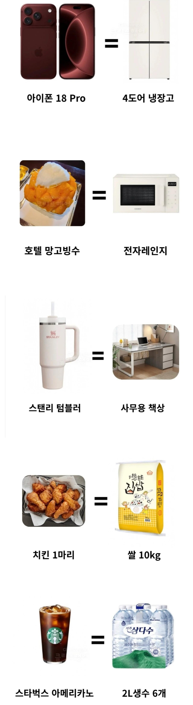

스벅 아메리카노 3천원대 아냐?
생수6개가 3000원정도지
아 그래? 삼다수는 비싸던데
스벅 커피 3000원대는 아메리카노가 아니라 오늘의커피 숏사이즈
10년전에도 4천원이었는데 1999년 이후로 카페를 가본 적이 없으신가요?
내가 마지막에 갔을 때도 5200원인가 그랬던거 같은데
19년도 였나 그럼
아반떼 중고차 = rtx5090
서울 집값 =서울 노동자 30년치 연봉
이번에 인상되었습니다. 서울노동자 50년치 연봉
삼전닉스면 10년도 충분(내년같이 10년가면)
화성, 청주, 이천, 파주 등등 삼성, 하이닉스 있는 지방 도시 ㅋㅋ
성과금기준이면 어우 ㄷㄷㄷ
삼전닉스도 10년이라는게 충격이다
끼야아아악!!
내 몸값 = 휴지
텀블러 책상은 아닌듯
아니 책상은 뭘 쓰면 스텐리 텀블러 값이냐
테무 산인가보지 뭐
가끔 뒤져보면 진짜 흔들거리는 1인용 책상같은건 3만원짜리도 있긴 함 노트북 16인치 올려놓으면 마우스 싸로 쓰기도 애매할만큼 작음
그냥 스탠리 텀블러가 존나 비싸다 뭐 그런거겠지
스탠리 생각해보면 그리비싼것도아님 대부분카페 텀블러들고가면 500원 할인해주는데
10번마시면 5천원 100번마시면 5만원 정도인데
100번이면 하루에 한잔이라치고 주말빼고 20일정도라고치면 5개월이면 텀블러값나옴
물론저거사는놈들이 하나만 사지는않더라
...... 보온/보냉 똑같이 되는 다이소껀 5천원인데 5만원이면 비싼게 맞지 뭐
나도 텀블러 좋아해서 한 세개 정도 버리고 5개정도 남았는데 스탠리/스타벅스 이런 브랜드 껀 비싼거 맞음
여러개쓰면 비싸다고생각할수있는데 나처럼 한개로 쭉쓰는사람한테 5만원에 고급품 하나사는건
괜찮다고 생각함
버린 세개는 워낙에 오래 썼으니까 버린거고
나머지 5개 구매한거 돈 다 합쳐도 4만원이 안되는데 한개에 5만원이 안비싸다고?
여러개 갖고 있건 한개를 갖고 있건 한개에 5만원이면 비싼거지 뭔소리야
아니 텀블러 하나에 5만원정도 줄수있는거지 다이소 5천원이 엄청싼거지 원래 텀블러들 대부분 2~3만원정도했음 세상제품 전부 다이소꺼랑 비교하기 시작하면 안비싼게 없겠다
삼다수 2리터가 저렇게 싸요?
ㅇㅇ 특가가 2L24페트 2만원 물하나 이런건 24페트 1만원
이렇게 보니까 죄다 사치품들 같긴하네
왜 오른쪽이 존나 싸다고 느껴지냐 ㅋㅋㅋ
이거 아까도 올라와서 저거만든새끼가 저능하다고 생각이드는게
왼쪽은 최고급품 가져오고 오른쪽은 냉장고제외 최하품 들고옴
냉장고도 오브제 4도어짜리아니면 걍 고만고만하다는거임
사실냉장고도 끝판왕 가져오면 서브-제로 2400만원짜리가 있어서 얘는또 자동차랑 비교해야함
쌀10k 28800원이네 하 시발 치킨값 개새끼들
4도어는 모르겠고
양문형은 가끔 특가로 60만원대도 나오긴 하더라
스탠리 몇만원정도 성능 해?
맨날 커피 시켜놓고 애 보다오면 물 흥건한거 마셔서 고민중
텀블러는 기능만 놓고보면 3만원이면 떡을친다 공정거래위 글있을거임
오 감사용
와;;;; 오른쪽개혜자네
사실 본문 내용은 뭘 더 가치를 두냐에 따라 가격이 뒤바뀔 수도 있음 ㅋㅋ
애플 상위 모델 휴대폰 = 삼엘 중하급 냉장고
호텔망고빙수 = 삼엘 중하급 전자랜지
BHC, BBQ, 교촌 치킨 = 대충 마트에 할인해서 파는 쌀 10kg
스타벅스 아이스 아메리카노 = 저가형 생수
대충 요런 느낌이라 누군 왼쪽보다 오른쪽이 더 비싸기도 할 수 있으니 너무 맹신하진 말자
생필품의 가격안정화
2리터 생수 6개 묶음 코코나 트더에서 사면 2천원도 안 함ㅋㅋㅋㅋ
오른쪽에 있는 애들이 훨씬 꿀맛이고 실용적이군
달리 말하면,
=> 사치를 안부리면 기본적인 생존비용은 저렴하다 (부동산 제외)
=> 그에따라 사람들은 생필품 외의 소비를 매우 큰 폭으로 줄이고 있음
괜찮네